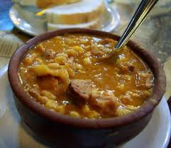

Locro argentino
Que es un Locro Argetino???
El locro argentino es un plato tradicional y emblemático de la cocina del país, especialmente consumido
en fechas patrias como el 25 de mayo o el 9 de julio. Es un guiso espeso y nutritivo, a base de maíz
blanco, zapallo (calabaza), porotos (frijoles) y carne, que incluye diferentes cortes, como carne de
cerdo, panceta, chorizo y a veces carne de res. Es un plato de origen prehispánico, que luego fue
adaptado con la llegada de los colonizadores españoles.

Ingredientes
los ingredientes para preparar un buen locro son:
ElMaíz blanco (o maíz partido). Este es uno de los ingredientes principales, que le da textura y
sustancia
al locro.
Los Porotos (frijoles, alubias) que es otro elemento clave que aporta proteínas y textura.
El Zapallo (calabaza) que Aporta sabor, color y ayuda a espesar el guiso.
La Carne de cerdo que Generalmente se utilizan cortes grasos, como el pechito de cerdo o la panceta, y
también
chorizo colorado (chorizo de cerdo ahumado).
La carne de vaca que puede llevar cortes de carne de res como falda o roast beef.
Se usa cebolla, pimentón, laurel, comino y sal para darle sabor al guiso.
Para preparar la salsa o "fritura" que se le agrega al final, junto con cebolla de
verdeo, ajo y pimentón.
Prearacion
para poder preparar un buen locro debemos:
Primero tenemos que remojar el maíz y los porotos: La noche anterior a la preparación, deja en remojo el
maíz y los porotos
en agua para que se hidraten y ablanden.
Luego se cociuna la carne en una olla grande, pon a cocinar las carnes (de cerdo y vaca si usas), junto
con los
huesos, para darle más sabor al caldo. Esto se cocina a fuego lento hasta que esté tierno.
Se agrega el maíz, los porotos y el zapallo y una vez que las carnes estén casi listas, añade el maíz y
los
porotos remojados. También agrega el zapallo cortado en trozos pequeños, que se deshará durante la
cocción y le dará cuerpo al locro.
Se deja que todo se cocine a fuego bajo por varias horas, removiendo de vez en cuando
para que no se pegue y para ayudar a que el zapallo se deshaga, dándole espesor al guiso.
Al final de la cocción se prepara una fritura con cebolla, ajo, pimentón y
grasa o aceite. Esta salsa se añade al locro para darle más sabor.
y para finiquitar se sirve caliente en platos hondos, y opcionalmente, acompaña con más salsa o ají
picante, según el
gusto de cada uno.